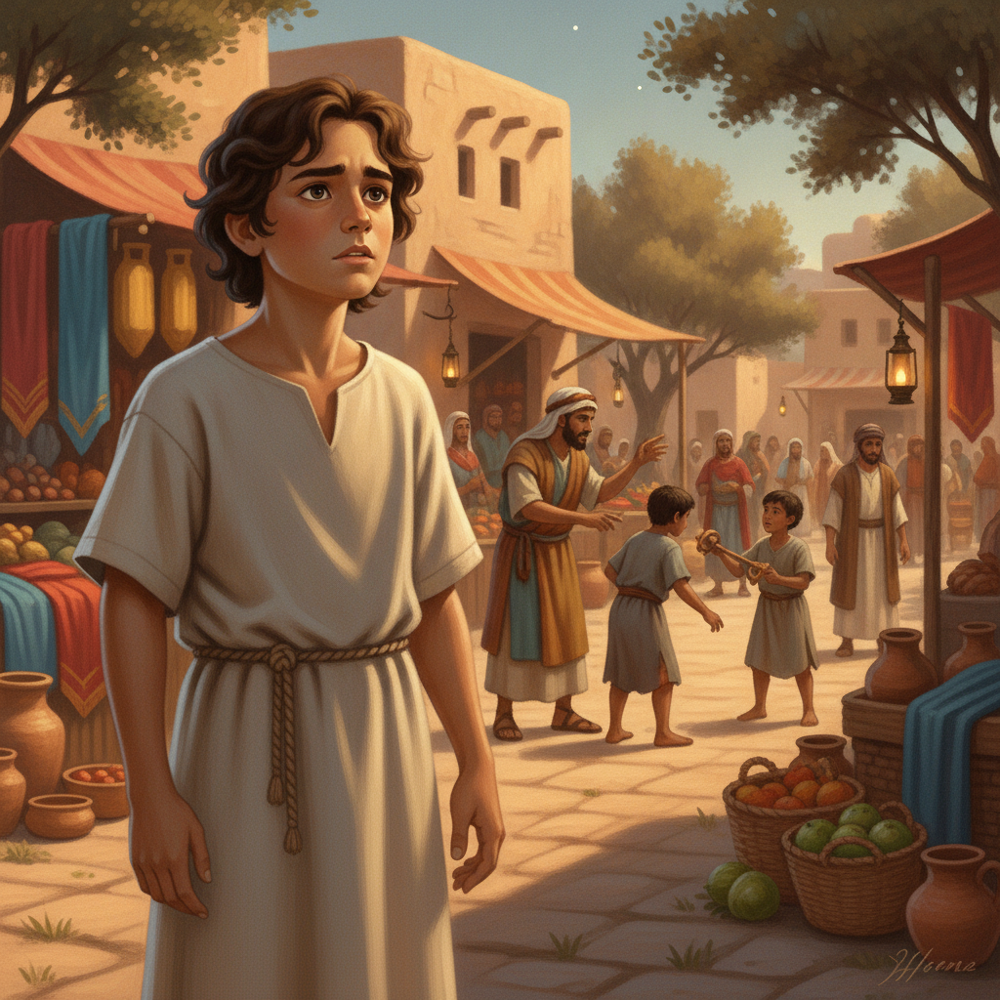
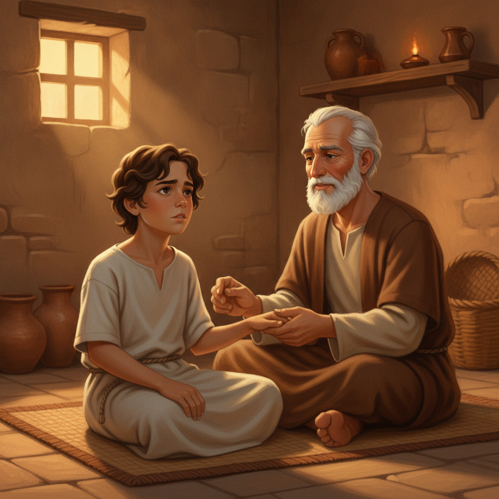
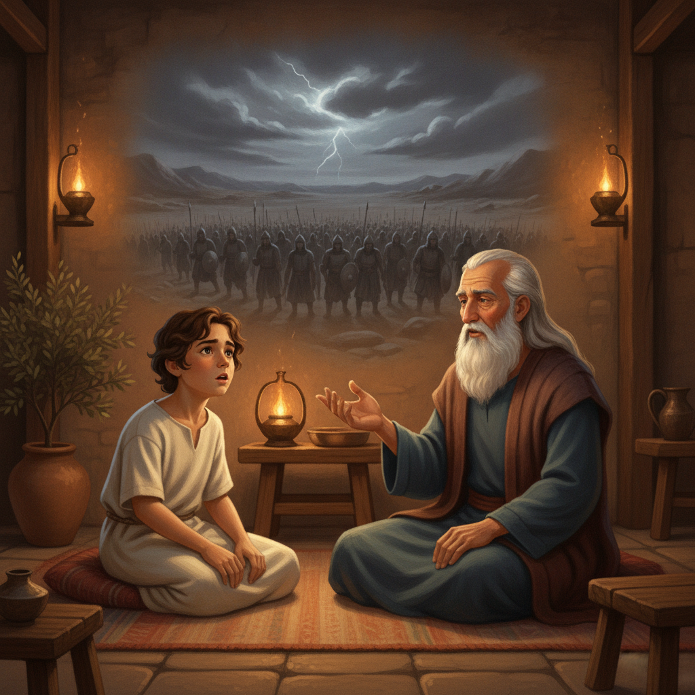
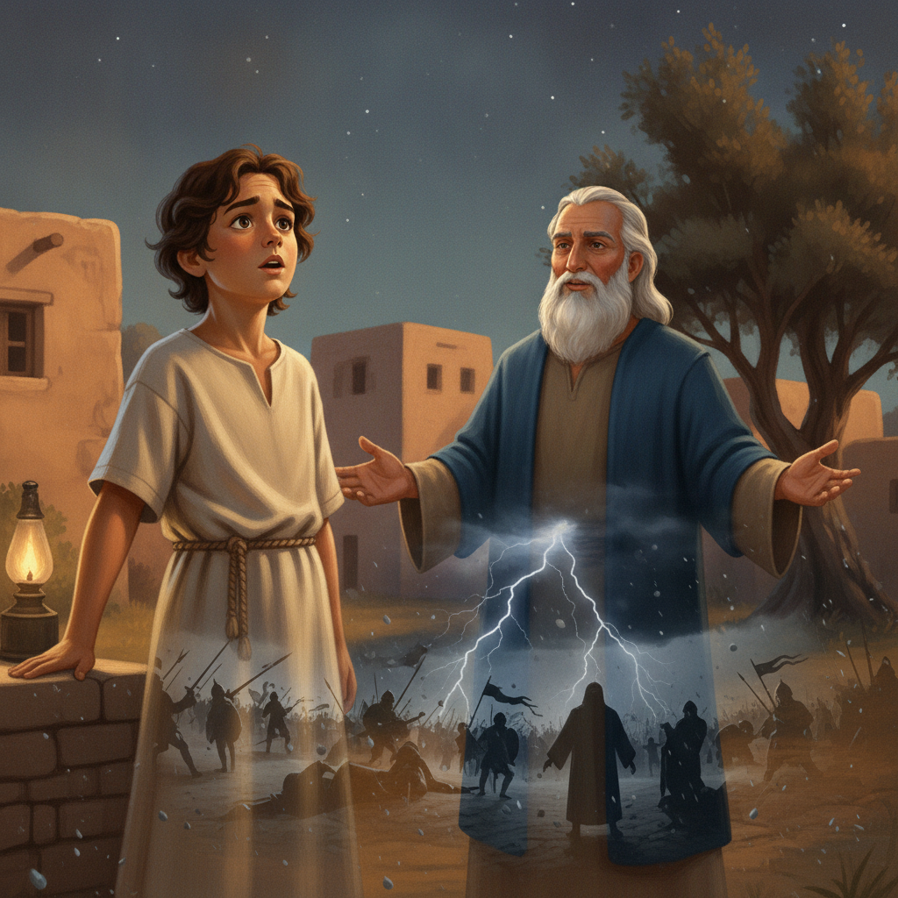
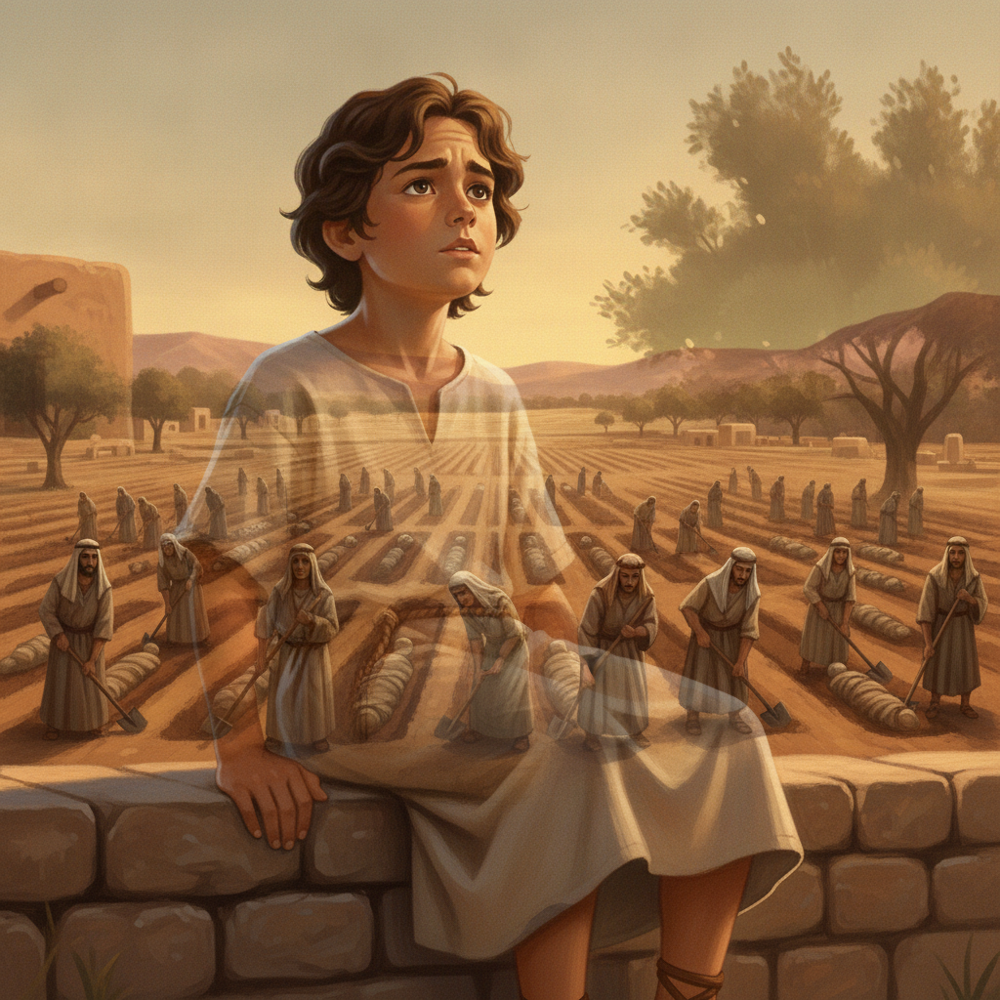
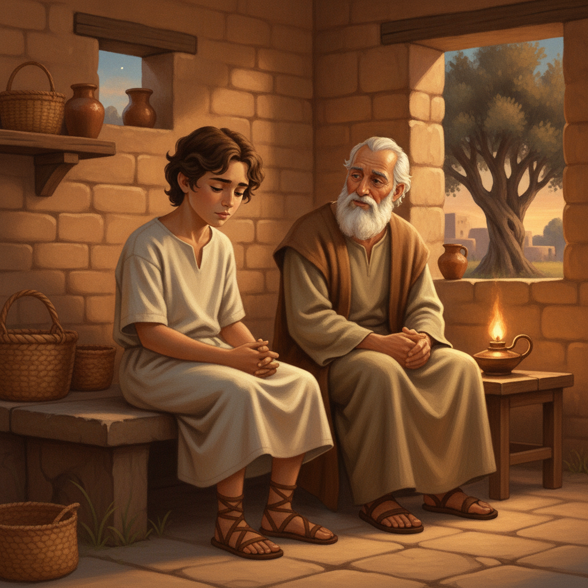

아담은 햇살 좋은 이스라엘 마을에서 자라는 열 살 소년이었어요. 언제나 호기심이 가득했죠. 그는 어른들이 세상에 나쁜 일들이 너무 많다고 걱정하는 이야기를 종종 들었어요. "정의가 정말 이루어질까? 왜 나쁜 사람들이 자기 멋대로 행동하는 걸까?" 아담은 밤하늘의 별을 보며 생각에 잠겼어요. 그의 마음속에는 늘 해답을 찾고 싶은 질문들이 가득했답니다.
어린이를 위한 말씀 이야기
아담은 햇살 좋은 이스라엘 마을에서 자라는 열 살 소년이었어요. 언제나 호기심이 가득했죠. 그는 어른들이 세상에 나쁜 일들이 너무 많다고 걱정하는 이야기를 종종 들었어요. "정의가 정말 이루어질까? 왜 나쁜 사람들이 자기 멋대로 행동하는 걸까?" 아담은 밤하늘의 별을 보며 생각에 잠겼어요. 그의 마음속에는 늘 해답을 찾고 싶은 질문들이 가득했답니다.

어느 날, 아담은 시장에서 한 상인이 가난한 사람에게 비싼 값으로 물건을 파는 것을 보았어요. 또래 친구들이 작은 돌멩이 하나로 다투는 모습도 보았죠. 아담의 마음은 불편했어요. "왜 사람들은 자기만 생각할까? 왜 이렇게 불공평한 일이 생길까?" 그의 작은 가슴속에는 답답함과 슬픔이 밀려왔어요. 모두가 함께 행복할 수 없을까, 아담은 간절히 바랐죠.

아담은 집으로 돌아와 할아버지께 시장에서 본 일들을 이야기했어요. 할아버지께서는 아담의 손을 따뜻하게 잡아주셨죠. "아담아, 이 세상에는 나쁜 일들이 많이 일어나지만, 하나님께서는 이 모든 것을 보고 계신단다." 할아버지의 목소리는 조용했지만 단호했어요. "하나님은 사랑의 하나님이시지만, 동시에 공의의 하나님이시란다. 그분은 결국 모든 불의를 심판하시고, 모든 것을 바르게 만드실 거야." 아담은 할아버지의 말씀을 들으며 조금씩 안심이 되었어요.

할아버지는 아담에게 옛날 이야기를 들려주셨어요. "아주 먼 옛날, 곡이라는 왕이 무시무시한 큰 군대를 이끌고 하나님의 백성을 공격하러 왔단다. 그 군대는 마치 거대한 메뚜기 떼처럼 온 땅을 뒤덮을 만큼 많았지." 아담은 할아버지의 이야기를 들으며 눈을 크게 떴어요. 그의 머릿속에는 엄청난 수의 병사들이 칼과 방패를 들고 땅을 흔들며 다가오는 모습이 생생하게 그려졌어요. 과연 하나님의 백성은 어떻게 되었을까, 아담은 숨을 죽였어요.

「하지만 두려워할 필요 없단다, 아담아.」 할아버지는 미소 지으셨어요. 「하나님께서는 자기 백성을 직접 지키기로 하셨어!」 하나님은 하늘에서 큰 우박을 내리시고 땅을 흔들며, 곡의 군대가 서로 싸우게 하셨대요. 번개가 치고 큰 지진이 일어나서 그 거대한 군대는 순식간에 혼란에 빠지고 모두 쓰러져 버렸지. 아담은 그 말씀을 듣고 놀라서 입을 다물지 못했어요. 아무리 강한 군대라도 하나님 앞에서는 아무것도 아니라는 것을 깨달았죠.

「그 전쟁이 끝난 후, 땅은 수많은 적들의 시체로 가득했단다.」 할아버지는 진지하게 말씀하셨어요. 「하나님께서는 이스라엘 백성에게 그 시체들을 모두 매장하여 땅을 깨끗하게 하라고 명령하셨어. 무려 일곱 달 동안이나 온 백성이 힘을 합쳐 땅을 정결하게 했단다.」 아담은 사람들이 넓은 골짜기에서 삽을 들고 땀 흘리며 시체들을 묻는 모습을 상상했어요. 그들에게는 쉽지 않은 일이었겠지만, 하나님의 명령에 순종하는 중요한 일이었죠.
「왜 그렇게 오랜 시간 동안 땅을 깨끗하게 해야 했을까요, 할아버지?」 아담이 물었어요. 할아버지는 아담의 머리를 쓰다듬으며 설명하셨죠. 「하나님께서는 죄로 더럽혀진 땅에 다시 그분의 영광을 드러내기를 원하셨기 때문이란다.」 땅이 깨끗하게 정돈되자, 그곳에는 하나님의 영광이 환하게 빛나기 시작했대요. 아담은 깨끗한 마음으로 하나님께 순종할 때 하나님의 놀라운 영광을 경험할 수 있다는 것을 배웠어요.
「할아버지, 그럼 지금도 하나님께서 나쁜 사람들을 이렇게 심판하시나요?」 아담이 진지하게 물었어요. 할아버지는 고개를 끄덕이셨어요. 「그렇단다, 아담아. 하나님께서는 세상의 모든 죄와 악을 반드시 심판하실 거야. 그리고 우리의 진짜 왕이신 예수님께서 다시 오셔서 이 모든 것을 완전히 깨끗하게 하고, 영원히 아름다운 세상을 만드실 거란다.」 아담은 예수님이 오실 날을 생각하며 가슴이 따뜻해졌어요.

할아버지는 이어서 말씀하셨어요. 「옛날 사람들이 땅을 정결하게 한 것처럼, 우리도 매일매일 우리의 마음을 깨끗하게 해야 한단다.」 아담은 눈을 깜빡이며 할아버지의 말씀을 새겼어요. 「나쁜 생각이나 말, 행동을 할 때면 바로 하나님께 죄송하다고 말씀드리고 용서를 구하는 거지.」 할아버지의 말씀은 아담의 마음에 깊이 새겨졌어요. 우리의 작은 잘못도 하나님 앞에서는 깨끗하게 해야 한다는 것을 알게 되었죠.
아담은 이제 더 이상 세상의 불공평한 일들 때문에 마음 아파하지만은 않았어요. 그는 할아버지의 말씀을 통해 하나님께서 모든 것을 지켜보시고, 결국에는 모든 악을 심판하시며 세상을 깨끗하게 하실 것을 믿게 되었죠. 아담은 오늘도 깨끗한 마음으로 예수님이 다시 오실 날을 기다리며 작은 돌멩이를 냇물에 던졌어요. 그의 얼굴에는 밝고 희망찬 미소가 가득했어요. 하나님 안에서 그는 언제나 용감하고 지혜로울 것이에요.
오늘 설교의 본문은 에스겔 39장 11-20절로, 구약성경의 '종말론'적 예언 중 하나입니다. 이스라엘을 대적하는 악한 세력 '곡'과 그 연합군에 대한 하나님의 최종 심판을 다룹니다. 설교자는 이 본문을 통해 우리가 종종 두려워하거나 간과하는 하나님의 '공의'를 강조합니다. 하나님은 사랑의 하나님이실 뿐만 아니라, 모든 불의를 반드시 심판하시고 선악의 기준을 세우시는 공의로운 분이심을 드러내기 위해 이 말씀을 택했습니다. 이는 하나님의 사랑과 공의가 분리될 수 없는 그분의 완전한 성품임을 이해하게 합니다.
설교는 우리가 하나님의 사랑은 쉽게 받아들이지만, 하나님의 공의는 두려워하고 회피하는 경향이 있다는 '문제' 제기로 시작합니다. 심지어 불신자들의 '사랑의 하나님이 어떻게 한 민족을 멸절시키느냐'는 질문에 답하기 어려워하는 우리의 '긴장'을 지적합니다. 하지만 설교자는 하나님의 공의가 없으면 선악의 기준이 무너지고 혼란이 온다는 점을 명확히 합니다.
이어지는 '성경적 해답'은 에스겔 39장이 보여주는 곡의 심판입니다. 이는 이스라엘의 죄 때문이 아니라, 하나님께서 악을 최종적으로 심판하시고 온 열방 가운데 자신의 영광을 드러내시기 위한 '하나님께 속한 전쟁'임을 강조합니다. 이스라엘의 역할은 승리한 전쟁 후 땅을 정결하게 하는 일입니다. 이는 악이 반드시 하나님의 공의로운 심판을 받고, 하나님이 정하신 방법(회개 또는 심판)으로 '정결케' 되어야 진정한 회복이 일어남을 상징합니다. 시체를 매장하고 잔재물을 없애는 것은 악을 완전히 끊어내고 다시 돌아가지 않겠다는 의지를 보여줍니다. 설교는 요한계시록 19장을 병행구절로 제시하며, 이 최종 심판을 백마 탄 예수 그리스도께서 완성하실 것이며, 악인들의 죽음이 피조 세계에는 '큰 잔치'가 될 것임을 연결합니다. 예수님께서 우리 죄를 위해 당신의 살과 피를 내어주셨기에, 이제 우리는 예수님의 살과 피를 기념하며 그분의 재림을 기다리는 자들이 되었음을 역설합니다.
'적용' 부분에서는, 우리는 항상 정결함을 유지하도록 경성해야 하며, 1%의 부정함도 용납하지 않고 지속적으로 회개해야 함을 강조합니다. 교회의 사명은 심판 후 땅을 정결케 하여 하나님의 영광이 드러나도록 예비하는 것입니다. 재림 예수님께서 최후 심판을 이끄시므로 우리는 세상을 두려워하지 않고, 영적 전쟁을 대비하며 거룩을 지켜야 합니다. 궁극적으로 하나님의 공의로운 심판은 교회에게 두려움이 아니라 '기쁨'이며, 이것이 교회의 사명임을 선포합니다.
이번 주에 나는 내 삶 속에서 하나님의 공의가 작동하고 있음을 인정하고, 나의 회피했던 죄나 부족한 부분을 다시금 주님 앞에 가져가 철저히 회개하고 정결함을 위해 힘써야겠다. 또한 세상의 악 앞에서 두려워하기보다, 재림 예수 그리스도께서 모든 것을 심판하시고 승리하실 것을 믿으며 담대하게 나의 자리에서 하나님의 영광을 드러내는 삶을 살기 위해 노력해야겠다.